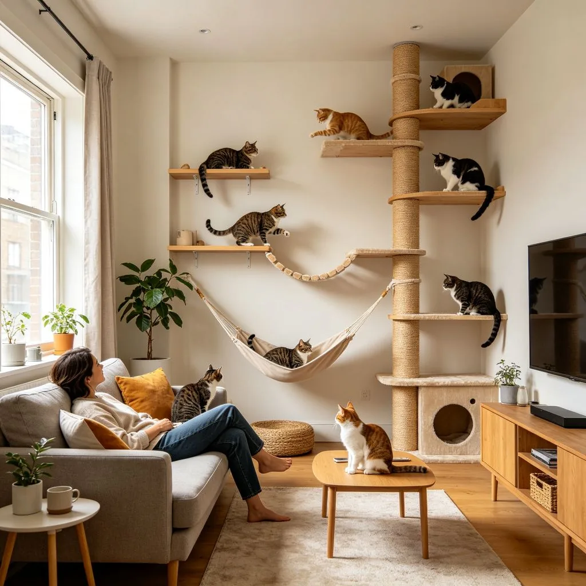
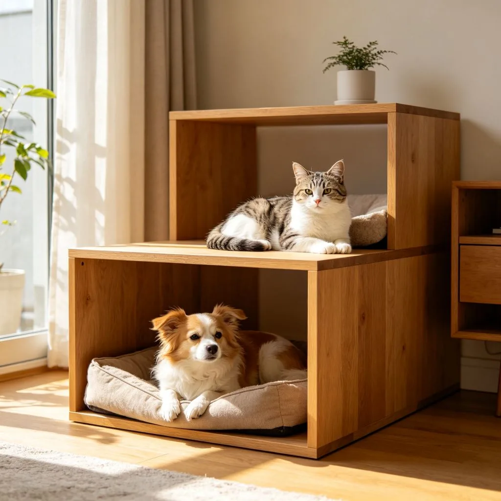
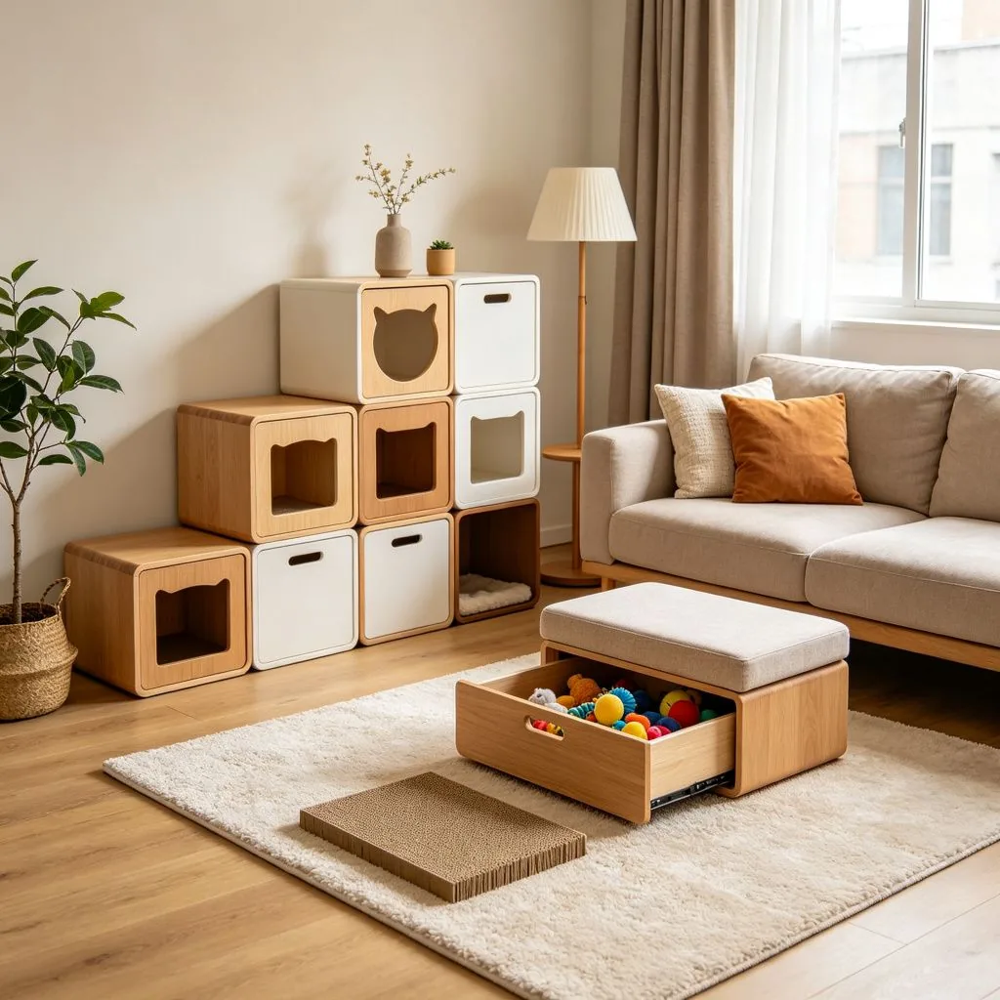

快速回答：客廳貓牆是貓咪的終極遊樂場。本文介紹貓牆的規劃原則、組件選擇（層板、跳台、爬柱、吊床）、安全設計、與電視牆/書架整合，以及預算規劃。 核心原則是垂直空間最大化、多功能傢俱整合、安全設計優先，以及依寵物習性規劃動線。
客廳貓牆是貓咪的終極遊樂場。本文介紹貓牆的規劃原則、組件選擇（層板、跳台、爬柱、吊床）、安全設計、與電視牆/書架整合，以及預算規劃。 隨著寵物在家庭中的地位提升，越來越多飼主開始重視寵物空間的規劃。本文將從實用角度出發，為你提供系統化的設計建議。
一、客廳貓牆與攀爬系統設計的核心設計原則
1.1 以寵物習性為出發點
成功的寵物空間設計始於對寵物習性的深入理解。貓咪喜歡居高臨下、需要垂直逃脫路線；狗狗需要開闊的活動空間與明確的進食區。觀察你的寵物日常行為，是規劃的第一步。

1.2 安全與美觀的平衡
寵物空間必須兼顧安全與美觀。所有材料應無毒、耐磨、易清潔；電線需妥善隱藏；銳角需包覆。同時，透過材質與色彩的搭配，讓寵物設施自然融入整體室內設計。
- 安全優先：無毒材料、防滑地板、安全閘門、電線管理。
- 功能完整：進食、飲水、如廁、睡眠、遊戲五大區域。
- 美觀整合：與居家風格一致的材質與色彩。
- 易於清潔：防水、防污、可拆洗的設計。
二、客廳貓牆與攀爬系統設計的實作步驟
2.1 步驟一：空間評估與需求盤點
開始規劃前，先評估可用空間的尺寸、採光、通風條件，並盤點寵物的實際需求。記錄寵物的日常活動路線、偏好的休息地點、進食與如廁習慣。
2.2 步驟二：動線與區域劃分
根據空間條件與寵物需求，劃分進食區、飲水區、如廁區、睡眠區、遊戲區。確保各區域之間的動線流暢，避免衝突（如貓砂盆不應緊鄰餵食區）。

2.3 步驟三：傢俱與設備選擇
選擇符合空間風格且寵物友善的多功能傢俱。優先考慮可收納、可調整、易清潔的設計。垂直空間的利用是小坪數的關鍵——貓跳台、貓走道、層板收納都能有效釋放地面空間。
2.4 步驟四：安全檢查與調整
完成佈置後，進行全面的安全檢查：確認所有固定件牢固、無尖銳邊角、電線已隱藏、化學品已上鎖。觀察寵物使用一週後的反應，再進行微調。
三、常見問題 FAQ
Q1：貓牆的層板間距應該多少？
A：這取決於你的空間條件與寵物需求。一般來說，即使是小空間也能透過垂直利用與多功能設計打造舒適的寵物空間。建議先從核心需求（如進食、如廁、睡眠）開始規劃，再逐步擴充。預算方面，DIY方案可以從數千元起，訂製傢俱則需視規模而定。
Q2：貓牆可以支撐多重的貓？
A：這取決於你的空間條件與寵物需求。一般來說，即使是小空間也能透過垂直利用與多功能設計打造舒適的寵物空間。建議先從核心需求（如進食、如廁、睡眠）開始規劃，再逐步擴充。預算方面，DIY方案可以從數千元起，訂製傢俱則需視規模而定。

Q3：貓牆會影響客廳美觀嗎？
A：這取決於你的空間條件與寵物需求。一般來說，即使是小空間也能透過垂直利用與多功能設計打造舒適的寵物空間。建議先從核心需求（如進食、如廁、睡眠）開始規劃，再逐步擴充。預算方面，DIY方案可以從數千元起，訂製傢俱則需視規模而定。
Q4：貓牆需要定期維護嗎？
A：這取決於你的空間條件與寵物需求。一般來說，即使是小空間也能透過垂直利用與多功能設計打造舒適的寵物空間。建議先從核心需求（如進食、如廁、睡眠）開始規劃，再逐步擴充。預算方面，DIY方案可以從數千元起，訂製傢俱則需視規模而定。
重點整理
1. 客廳貓牆與攀爬系統設計的核心是安全、功能、美觀三者平衡。
2. 垂直空間是小坪數的最大救星，貓跳台與貓走道能有效釋放地面。
3. 依寵物習性規劃動線，避免進食區與如廁區過近。
4. 選擇無毒、耐磨、易清潔的材料。
5. 完成後觀察寵物使用情況，持續微調優化。
希望本文的客廳貓牆與攀爬系統設計指南對你有所幫助。記住，最好的寵物空間不是花最多錢，而是最符合你與毛孩子生活習慣的設計。從小地方開始改變，逐步打造屬於你們的理想家園。